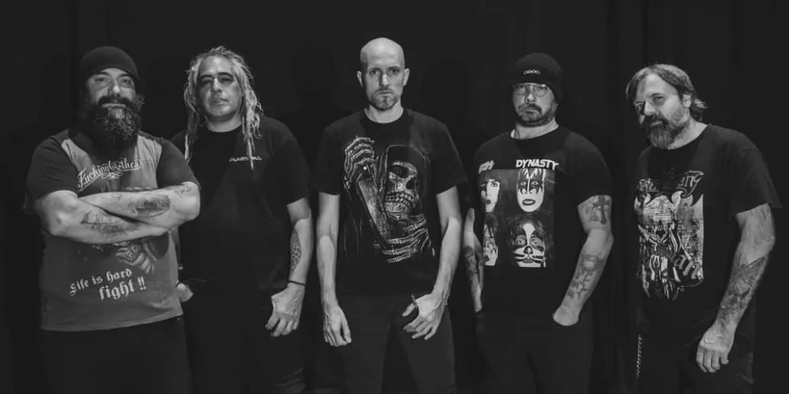

Los orígenes de Jerikó datan de octubre de 1992.
| Año | Disco |
|---|---|
| 1994 | Bajo mi ley (EP) |
| 1996 | En vivo |
| 1997 | Tierra violada |
| 1999 | Tensiones |
| 2003 | En La Sangre |
| 2004 | Jerikó (grabaciones rescatadas de la etapa con Walter Meza) |
| 2007 | Instinto |
| 2009 |
CD Compilatorio de Covers (Incluye un tema inédito, adelanto del disco que se encuentran pre-produciendo) |
| 2011 | En Origen |
| 2021 | Hasta el final |
| 2023 | Rendidos... a nadie (30 Años) |